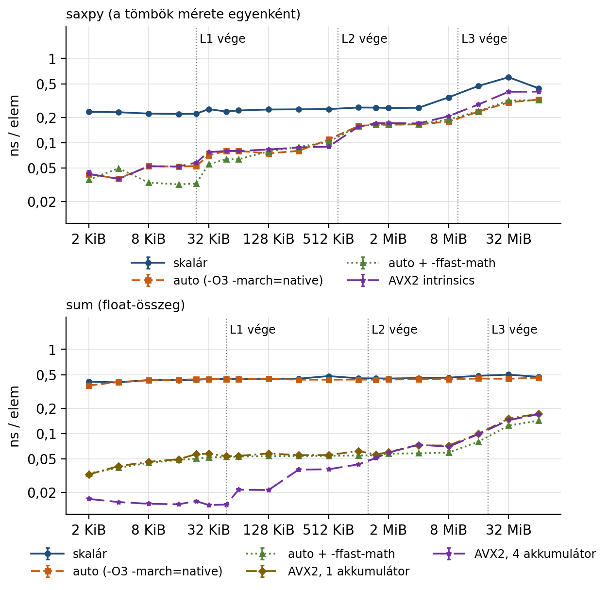

Egymillió float összege egy négysoros ciklus.
Lefordítjuk a processzor minden vektorutasítását engedélyezve
(g++ -O3 -march=native), és L1-ben elférő, 32 KiB-os tömbön
mérjük (i5-13400F, egy P-mag, 2026-11-25): 0,443 ns elemenként,
gyakorlatilag ugyanannyi, mint vektorizálás nélkül (0,444 ns). Ugyanez a
ciklus kézzel írt AVX2-utasításokkal, négy részösszeggel 0,014 ns
elemenként, azaz mintegy 31-szer gyorsabb.
Nyolc sáv harmincegyszeres gyorsulást? És miért nem végzi el ezt a
fordító helyettünk? Ebben az alfejezetben vektorizáljuk a
saxpy és a sum kernelt: először a fordítóval,
aztán intrinsicekkel (a processzor utasításait
C++-függvényként elérő hívásokkal), és az eredményt elhelyezzük a
roofline-on (A roofline-modell). A SIMD elve sáv-, maszk- és redukciófogalmait
végig használjuk.
Vektoros kódhoz három út vezet: a fordító autovektorizációja (a forrás változatlan marad), az intrinsicek (mi választjuk az utasításokat) és a kész, vektorizált könyvtárak. A következő ábra az első két utat hasonlítja össze mérésen, a tömbméret függvényében.

Három dolgot figyelj meg. A felső panelen (saxpy) a
három vektoros görbe nagyjából együtt mozog (az -ffast-math
görbe az L1-ben helyenként alacsonyabb), és a cache-határok után a
skalárhoz közelít. Az alsó panelen (sum) az automatikus
változat a skalárral esik egybe: itt a fordító nem
gyorsított. A négy akkumulátoros görbe pedig az L1-ben messze a többi
alatt fut, de a nagy tömböknél beleolvad a többi vektoros görbébe, mert
ott a memória szab határt.
A fordító akkor tud egy ciklust vektorizálni, ha bizonyítani tudja, hogy az átalakított program ugyanazt számolja. Ehhez általában az kell, hogy:
Nézzük meg négy cikluson (vec_demo.cpp):
#include <cstddef>
void saxpy(float a, const float* x, float* y, std::size_t n) {
for (std::size_t i = 0; i < n; ++i) y[i] = a * x[i] + y[i];
}
float sum(const float* x, std::size_t n) {
float s = 0;
for (std::size_t i = 0; i < n; ++i) s += x[i];
return s;
}
void prefix(float* x, std::size_t n) {
for (std::size_t i = 1; i < n; ++i) x[i] += x[i - 1];
}
std::size_t find(const float* x, std::size_t n, float key) {
for (std::size_t i = 0; i < n; ++i)
if (x[i] == key) return i;
return n;
}A GCC az -fopt-info-vec-optimized kapcsolóval jelenti,
mit vektorizált, az -fopt-info-vec-missed kapcsolóval
pedig, mit nem (g++ 15.2.0, x86-64, a mérőgépen):
g++ -std=c++20 -O3 -march=native -fopt-info-vec-optimized -c vec_demo.cpp -o /dev/null
g++ -std=c++20 -O3 -march=native -fopt-info-vec-missed -c vec_demo.cpp -o /dev/null 2>&1 \
| grep -E "couldn't|not vectorized" | sort -uvec_demo.cpp:3:31: optimized: loop vectorized using 32 byte vectors
vec_demo.cpp:3:31: optimized: loop versioned for vectorization because of possible aliasing
vec_demo.cpp:3:31: optimized: loop vectorized using 16 byte vectors
vec_demo.cpp:7:31: optimized: loop vectorized using 32 byte vectors
vec_demo.cpp:14:31: optimized: loop vectorized using 32 byte vectors
vec_demo.cpp:11:31: missed: couldn't vectorize loop
vec_demo.cpp:11:44: missed: not vectorized: no vectype for stmt: _3 = *_2;saxpy): vektorizálva 32 bájtos
(256 bites) vektorokkal, a maradékhoz 16 bájtosakkal is. A „versioned …
aliasing” azt jelenti, hogy a fordító két ciklusváltozatot készít, és
futásidőben dönt: ha x és y veszélyesen közel
van egymáshoz, a skalár változat fut. A __restrict ígéret
(A fordító kimenete: C-ből assembly) ezt az
ellenőrzést teszi feleslegessé; a mérésben 16 KiB-os tömbökön a két
változat gyakorlatilag azonos (0,0522 és 0,0518 ns/elem).prefix): nem vektorizálható
így, mert minden elem az előző már módosított elemétől
függ.find): a GCC 15 a korai
kilépésű keresést is vektorizálta. Az assemblyben látszik, hogy előbb
skalár lépésekkel 32 bájtos határra igazítja a mutatót, és csak utána
olvas nyolcasával: egy igazított vektor nem lép át laphatárt, így a
találat utáni túlolvasás nem okozhat hibát.sum): a jelentés szerint
„vektorizálva” van. Az assembly mást mutat:.L33:
vaddss xmm0, xmm0, DWORD PTR [rax]
add rax, 32
vaddss xmm0, xmm0, DWORD PTR -28[rax]
vaddss xmm0, xmm0, DWORD PTR -24[rax]
vaddss xmm0, xmm0, DWORD PTR -20[rax]
; ... még négy vaddss, majd cmp és jneA ciklus nyolc elemet lép, de nyolc skalár
összeadást (vaddss) végez, egymás után, ugyanabba a
regiszterbe. Ez a sorrendtartó redukció: a jelentésben vektorizálás, a
számításban egyetlen függőségi lánc. -ffast-math mellett
viszont egyetlen vaddps ymm0, ymm0, YMMWORD PTR [rax]
utasítás áll a ciklusban. A fordító jelentése tehát nem elég, az
assemblyt is olvasni kell (A fordító kimenete:
C-ből assembly).
Ugyanezek a parancsok -O2-vel a mi fordítónkon egyetlen
ciklusról sem jelentettek vektorizálást: a GCC -O2 szintje
csak nagyon olcsónak ítélt esetekben vektorizál (verziófüggő
viselkedés).
Az x86 AVX2 kiterjesztés 256 bites
(ymm) regisztereket ad, az FMA pedig
összevont szorzás-összeadást
(
egy utasításban, egyszeri kerekítéssel). Az intrinsic neve beszédes:
_mm256_<művelet>_<típus>, ahol ps
a csomagolt egyszeres, pd a csomagolt dupla pontosság. Az
__m256 típus nyolc float. A teljes program
első része:
// avx_demo.cpp – AVX2-intrinsics: saxpy, redukció, maszkolás, futásidejű diszpécselés (ca067)
#include <cstddef>
#include <cstdio>
#include <random>
#include <vector>
#include <immintrin.h>
#define AVX2 __attribute__((target("avx2,fma")))
__attribute__((noinline)) void saxpy_scalar(float a, const float* x, float* y, std::size_t n) {
for (std::size_t i = 0; i < n; ++i) y[i] = a * x[i] + y[i];
}
AVX2 void saxpy_avx2(float a, const float* __restrict x, float* __restrict y, std::size_t n) {
const __m256 va = _mm256_set1_ps(a); // a mind a 8 sávban
std::size_t i = 0;
for (; i + 8 <= n; i += 8) {
__m256 vx = _mm256_loadu_ps(x + i); // 8 float betöltése
__m256 vy = _mm256_loadu_ps(y + i);
vy = _mm256_fmadd_ps(va, vx, vy); // vy = va*vx + vy
_mm256_storeu_ps(y + i, vy);
}
for (; i < n; ++i) y[i] = a * x[i] + y[i]; // maradékciklus
}Soronként: _mm256_set1_ps egy skalárt minden sávba másol
(broadcast); loadu és storeu igazítatlan
címről is működő betöltés és tárolás; a fmadd nyolc sávban
számol; a végén skalár maradékciklus fut. A target
attribútum megengedi, hogy csak ez a függvény
használjon AVX2-t, miközben a program többi része bármely x86-64 gépen
fut.
Futásidejű képesség-ellenőrzés. Ha a bináris más
gépekre is kerül, a hívás előtt meg kell kérdezni a processzort:
__builtin_cpu_supports("avx2"), és hiányzó képességnél a
skalár utat kell hívni. A GCC
target_clones("avx2", "default") attribútuma ezt
automatizálja: több változatot fordít, és induláskor választ. Az
ellenőrzés elhagyása régebbi processzoron „illegal instruction” leállást
okoz.
Az AArch64 NEON kiterjesztése 128 bites (4
float). A fontosabb megfelelők (a NEON-kódot itt nem
fordítottuk le; forrás: [S-ARM-INTRIN]):
| Művelet | AVX2 | NEON |
|---|---|---|
| skalár minden sávba | _mm256_set1_ps(a) |
vdupq_n_f32(a) |
| betöltés / tárolás | _mm256_loadu_ps, _mm256_storeu_ps |
vld1q_f32, vst1q_f32 |
| összeadás, szorzás | _mm256_add_ps, _mm256_mul_ps |
vaddq_f32, vmulq_f32 |
| FMA: | _mm256_fmadd_ps(a, b, c) |
vfmaq_f32(c, a, b) |
| összehasonlítás | _mm256_cmp_ps(a, b, _CMP_GT_OQ) |
vcgtq_f32(a, b) |
| select: ? : | _mm256_blendv_ps(a, b, m) |
vbslq_f32(m, b, a) |
| sávok összege | keverések sorozata | vaddvq_f32(v) |
sávszám (float) |
8 | 4 |
A táblázatból a legveszélyesebb különbség az argumentumsorrend: a NEON FMA-nál az akkumulátor az első argumentum. Az AVX-512 512 bites regisztereket és külön maszkregisztereket ad; egyes processzorok nagy terhelésű 512 bites utasításoknál csökkentik az órajelet (ellenőrizendő: processzorfüggő, lásd [S-INTEL-SDM], [S-AGNER]).
A Számábrázolás gépközelből alfejezetben
láttuk, hogy a lebegőpontos összeadás nem asszociatív:
és
kerekítés miatt eltérhet. A vektorizált összegzés viszont átrendezi a
tagokat: nyolc részösszeget épít, és a végén adja össze őket. A fordító
alapból nem változtathatja meg a program eredményét, ezért ragaszkodik a
sorrendhez. Az -ffast-math (azon belül az
-fassociative-math) ezt a tilalmat oldja fel.
Intrinsicekkel a felelősség a miénk:
AVX2 static inline float hsum(__m256 v) { // 8 sáv összege
__m128 s = _mm_add_ps(_mm256_castps256_ps128(v), _mm256_extractf128_ps(v, 1));
s = _mm_add_ps(s, _mm_movehl_ps(s, s));
s = _mm_add_ss(s, _mm_shuffle_ps(s, s, 1));
return _mm_cvtss_f32(s);
}
__attribute__((noinline)) float sum_scalar(const float* x, std::size_t n) {
float s = 0;
for (std::size_t i = 0; i < n; ++i) s += x[i];
return s;
}
AVX2 float sum_avx2(const float* x, std::size_t n) { // 1 vektorakkumulátor
__m256 s0 = _mm256_setzero_ps();
std::size_t i = 0;
for (; i + 8 <= n; i += 8) s0 = _mm256_add_ps(s0, _mm256_loadu_ps(x + i));
float s = hsum(s0);
for (; i < n; ++i) s += x[i];
return s;
}
AVX2 float sum_avx2x4(const float* x, std::size_t n) { // 4 vektorakkumulátor
__m256 s0 = _mm256_setzero_ps(), s1 = s0, s2 = s0, s3 = s0;
std::size_t i = 0;
for (; i + 32 <= n; i += 32) {
s0 = _mm256_add_ps(s0, _mm256_loadu_ps(x + i));
s1 = _mm256_add_ps(s1, _mm256_loadu_ps(x + i + 8));
s2 = _mm256_add_ps(s2, _mm256_loadu_ps(x + i + 16));
s3 = _mm256_add_ps(s3, _mm256_loadu_ps(x + i + 24));
}
float s = hsum(_mm256_add_ps(_mm256_add_ps(s0, s1), _mm256_add_ps(s2, s3)));
for (; i < n; ++i) s += x[i];
return s;
}A hsum a felező redukció (A SIMD
elve): a felső 128 bitet hozzáadja az alsóhoz, majd kettőt, végül
egyet.
Miért kell több akkumulátor? Az ILP, függőségek és statikus ütemezés alfejezet
mérése szerint egy függőségi lánc a késleltetés ütemében halad, több
független lánc viszont az átbocsátási korlátig gyorsul. A
vektorakkumulátor is lánc: a következő vaddps az előző
eredményére vár. Ha az összeadás késleltetése
ciklus, és ciklusonként
indulhat, akkor legalább
független vektorakkumulátor kell a telítéshez. A szabályt a kézi példa
számokkal igazolja.
A sorrend ára: pontosság. Soros összegzésnél a
legrosszabb eset hibakorlátja nagyjából
szorozva az abszolút értékek összegével, ahol float-nál
.
A részösszegek rövidebb láncokból épülnek, ezért a hiba itt (pozitív
adatoknál) jellemzően kisebb, de ez nem garantált. A lényeg: a
vektorizált redukció más eredményt ad, és ezt a teszteknek
tűrniük kell.
FMA és reprodukálhatóság. A saxpy sem
mindig bitre azonos: az FMA egyszer kerekít, a külön szorzás és
összeadás kétszer. A GCC C++ módban alapértelmezésben összevonhatja a
szorzást és az összeadást FMA-vá, ha a célprocesszor tudja
(-ffp-contract).
Továbbvitt eredmény. Vektorizálás előtt döntsd el, megengedett-e az átrendezés; vektorizálás után ellenőrizd az assemblyt, és mérj L1-ben és DRAM-ban is: az L1-es méret a számítási, a nagy méret a sávszélesség-korlátot mutatja, és a redukcióhoz legalább vektorakkumulátor kell. Ezekre a vektorizált kernelekre és mérésükre épít a Vektor-ISA-k: RVV és SVE, az Esettanulmány: mérésvezérelt optimalizálás és a 2–3. záróprojekt: cache-szimulátor és mikrobenchmark-sorozat.
A küszöb feletti elemek összege elágazás nélkül:
// A t küszöb feletti elemek összege: a feltételből maszk lesz, nem elágazás.
AVX2 float sum_above_avx2(const float* x, std::size_t n, float t) {
const __m256 vt = _mm256_set1_ps(t);
__m256 s = _mm256_setzero_ps();
std::size_t i = 0;
for (; i + 8 <= n; i += 8) {
__m256 v = _mm256_loadu_ps(x + i);
__m256 m = _mm256_cmp_ps(v, vt, _CMP_GT_OQ); // sávonként csupa 1 vagy csupa 0
s = _mm256_add_ps(s, _mm256_and_ps(v, m)); // ahol hamis, 0,0-t adunk
}
float r = hsum(s);
for (; i < n; ++i) r += x[i] > t ? x[i] : 0.0f;
return r;
}Az AVX2 maszkja nem külön regiszter: egy __m256,
amelynek sávjai csupa egy vagy csupa nulla bitek. Az and
ezért „select 0-val”. Ha a két ág nem nulla és érték, a
blendv választ.
A kernelek mért teljesítményét a bench_peak és a
bench_stream programmal mért tetőkkel vetjük össze (egy
P-mag; i5-13400F, 2026-11-25). Csúcsok: AVX2 FMA float
145,1, double 73,0, skalár FMA 17,8 GFLOP/s. Sávszélesség:
L1-ben legfeljebb 314,5 GB/s, DRAM-ból (256 MiB, olvasás) 26,5 GB/s. Az
intenzitás a saxpy-nál
,
a sum-nál
FLOP/bájt.
Olvassuk végig:
float FMA-csúcs 48%-a. Csak összeadást végez; ha
összeadásból ciklusonként ugyanannyi indítható, mint FMA-ból, a
számítási plafonja a csúcs fele. Az L1-es sávszélességtető
-nél
GFLOP/s: mindkét korlát közelében jár.saxpy, -ffast-math, L1): 62,3
GFLOP/s, ami 374 GB/s átvitt adatot jelent, több a 314,5
GB/s-os „tetőnél”. A tető egy konkrét mérőprogram egyetlen legjobb
mérete (a triad 8 KiB-os tömbökön; 4 KiB-on 223, 16 KiB-on
csak 171 GB/s), nem a hardver elvi határa; ha egy kernel túllépi, a
tetőt a nagyobb értékre kell emelni. A write-allocate itt nem számít,
mert az L1-ben maradó sorokat nem kell újra beolvasni.saxpy_plain 64 MiB-os tömbökön 37,6 GB/s-ot ért el, a 26,5
GB/s-os olvasási tető fölött. Ennek a forgalomnak azonban csak
kétharmada olvasás (x és y, együtt kb. 25
GB/s), a harmadik harmad az y visszaírása. Ha egy magon az
egyidejűleg kinn lévő olvasási hibák száma a korlát (Nem blokkoló cache, memóriaszintű párhuzamosság és
prefetch), a visszaírás ezen felül fér el (valószínű magyarázat;
ellenőrizendő). Azt viszont ez sem magyarázza, hogy a kézi
saxpy_avx2 ugyanitt csak 29,7 GB/s-ot ad: a fordítási
változat is számít.saxpy_plain
assemblyje a native és a fast buildben
megegyezik; a különbség okát (például kód- vagy adatigazítás) nem
derítettük ki.matmul ikj,
,
double): vektorizálás 7,0-ról 16,1 GFLOP/s-ra
gyorsít, de a 73 GFLOP/s-os csúcstól messze marad. A belső ciklus egy
saxpy, iterációnként betöltéssel és tárolással; magasabb
értékhez regiszterblokkos magciklus kell (Cache-szimulátor és cache-tudatos
programozás).Jósoljuk meg az L1-es sum-időket. Feltevés (a mérésből
becsülve): az órajel kb. 4,5 GHz, a skalár és a 256 bites összeadás
késleltetése
ciklus, és ciklusonként
vektorösszeadás indulhat.
Egy egyszerű modell két paraméterrel tized-pontosságon belül adja mindhárom mérést. A 31-szeres gyorsulás nem varázslat: (sáv) (lánc) független összeadás fut egyszerre egyetlen helyett.
Roofline-ellenőrzés a DRAM-ban: a
sum_avx2x4 64 MiB-on 0,170 ns/elem, azaz
GFLOP/s, ami
GB/s. Ez a 26,5 GB/s-os tető 89%-a: itt a memória dönt, a négy
akkumulátor semmit sem ér.
A teljes program utolsó része a main; a blokkok egymás
után írva adják az avx_demo.cpp-t.
int main() {
const std::size_t n = 1'000'003; // 8-cal osztva 3 a maradék
std::mt19937_64 rng{67};
std::uniform_real_distribution<float> dist(0.0f, 1.0f);
std::vector<float> x(n), y(n);
for (auto& v : x) v = dist(rng);
for (auto& v : y) v = dist(rng);
if (!__builtin_cpu_supports("avx2") || !__builtin_cpu_supports("fma")) {
std::puts("nincs AVX2+FMA: csak a skalár út futhat");
return 0;
}
double ref = 0, ref_above = 0;
for (float v : x) {
ref += v;
if (v > 0.5f) ref_above += v;
}
const float r[3] = {sum_scalar(x.data(), n), sum_avx2(x.data(), n),
sum_avx2x4(x.data(), n)};
const char* name[3] = {"skalár", "AVX2, 1 akk.", "AVX2, 4 akk."};
std::printf("double referencia: %.4f\n", ref);
for (int k = 0; k < 3; ++k)
std::printf("%-14s %.4f rel. hiba %.2e\n", name[k], r[k], (r[k] - ref) / ref);
std::printf("x > 0.5 összege: %.4f (referencia %.4f)\n",
sum_above_avx2(x.data(), n, 0.5f), ref_above);
std::vector<float> y1 = y, y2 = y;
saxpy_scalar(2.5f, x.data(), y1.data(), n);
saxpy_avx2(2.5f, x.data(), y2.data(), n);
std::size_t diff = 0;
for (std::size_t i = 0; i < n; ++i) diff += y1[i] != y2[i];
std::printf("saxpy: %zu elem tér el a skalár (szorzás+összeadás) "
"és az FMA-változat között\n", diff);
}g++ -std=c++20 -Wall -Wextra -O2 avx_demo.cpp -o avx_demo && ./avx_demodouble referencia: 500309.7937
skalár 500315.3750 rel. hiba 1.12e-05
AVX2, 1 akk. 500310.7188 rel. hiba 1.85e-06
AVX2, 4 akk. 500309.6875 rel. hiba -2.12e-07
x > 0.5 összege: 375398.2500 (referencia 375398.1399)
saxpy: 190140 elem tér el a skalár (szorzás+összeadás) és az FMA-változat közöttA három összeg három különböző szám, és egyik sem a
double referencia. Az -O2 -march=native
fordításnál az utolsó sor 0 eltérést jelez (a skalár ciklus is FMA-t
kap), -ffp-contract=off mellett ismét 190140-et. A mérési
adatok feldolgozása, a kézi példa modelljével együtt:
import sys; sys.path.insert(0, "code")
from archkit import perf
_, rows = perf.read_bench_csv("figures/data/ca067-gyorsulas.csv")
t = {(r["build"], r["kernel"], r["x_bytes"] // 1024): r["median_ns_per_elem"] for r in rows}
GHZ = 4.5 # becslés a mérés ghz_est soraiból
model = {"sum_plain": 2 / 1, "sum_avx2": 2 / 8, "sum_avx2x4": 1 / (2 * 8)} # ciklus/elem
for kernel, cyc in model.items():
print(f"{kernel:11} modell {cyc / GHZ:.4f} mért {t['novec', kernel, 32]:.4f} ns/elem")
for build, kernel in [("native", "sum_plain"), ("fast", "sum_plain"), ("novec", "sum_avx2x4")]:
s = t["novec", "sum_plain", 32] / t[build, kernel, 32]
d = t["novec", "sum_plain", 65536] / t[build, kernel, 65536]
print(f"{build:6} {kernel:11} gyorsulás L1: {s:5.1f}x DRAM: {d:4.1f}x")sum_plain modell 0.4444 mért 0.4441 ns/elem
sum_avx2 modell 0.0556 mért 0.0578 ns/elem
sum_avx2x4 modell 0.0139 mért 0.0142 ns/elem
native sum_plain gyorsulás L1: 1.0x DRAM: 1.0x
fast sum_plain gyorsulás L1: 8.5x DRAM: 3.3x
novec sum_avx2x4 gyorsulás L1: 31.3x DRAM: 2.8xcode/bench/bench_saxpy.cpp-t a három kapcsolókészlettel
(-O2 -fno-tree-vectorize, -O3 -march=native,
-O3 -march=native -ffast-math), és ellenőrizd a
sum assemblyjét. A számaid gépfüggők lesznek.-march=native fordítás vagy ellenőrzés nélküli AVX2-hívás.
Javítás: target attribútum és
__builtin_cpu_supports, skalár tartalék úttal.-ffast-math bekapcsolása után
az isnan-ellenőrzés nem működik. Ok: a
kapcsoló azt is megengedi, hogy a fordító nem létező NaN-t és végtelent
feltételezzen, és programszinten bekapcsolhatja a denormális számok
nullázását. Javítás: csak a szükséges részkapcsolót
használd, és csak az érintett fordítási egységre._mm256_load_ps hívásnál. Ok: az igazított
betöltés 32 bájtos címet vár, a std::vector<float>
ezt nem garantálja. Javítás:
_mm256_loadu_ps, vagy igazított foglalás.__builtin_cpu_supports?_mm256_fmadd_ps(a, b, c), és hogyan írod meg ugyanezt
NEON-ban?vec_demo.cpp jelentése alapján
melyik ciklus nem vektorizálható, és miért? Írd le az iterációk közötti
függőséget a prefix ciklusban.-ffast-math-os
sum 64 MiB-on 0,1425 ns/elem. Hány GFLOP/s ez, mekkora
sávszélességet jelent, és a DRAM-tető hány százaléka?count_above_avx2(x, n, t) függvényt, amely megszámolja a
feletti elemeket a _mm256_movemask_ps és a
__builtin_popcount segítségével. Ellenőrizd skalár
referenciával.-O3 -ffast-math fordítással (march
nélkül) az avx_demo „skalár” sora 500310.1250 lesz.
Magyarázd meg, miért változott, és miért nem egyezik egyik korábbi
sorral sem.Vektoros kód a fordítótól vagy intrinsicekből jöhet. Az
autovektorizációnak számlálható, függőségmentes, folytonos ciklus kell;
aliasingnál futásidejű ellenőrzéssel kétféle ciklus készül. A
lebegőpontos összeadás nem asszociatív, ezért a fordító
-ffast-math nélkül sorrendtartó, skalár összeadásláncot ad,
akkor is, ha a jelentése vektorizálást jelez: az assemblyt is
ellenőrizni kell. Intrinsicekkel legalább
vektorakkumulátor telíti az összeadókat; mérésünkben a négy
akkumulátoros sum L1-ben 31-szer, DRAM-ból csak kb. 3-szor
gyorsabb a skalárnál. Az eredmény bitre eltérhet, FMA miatt a
saxpy-nál is, ezért előre el kell dönteni, megengedett-e az
átrendezés. A vektorizált kerneleket L1-ben és DRAM-ban, roofline-nal
értékeljük; ezekre a mérésekre épül a következő alfejezet, az
esettanulmány és a záróprojekt.
vfmaq_f32(c, a, b) (négy
sáv).prefix (11. sor): az
.
iteráció
-et
számol, ahol
az előző iteráció eredménye, tehát minden iteráció az előzőre vár.count.cpp,
g++ -std=c++20 -Wall -Wextra -O2):__attribute__((target("avx2,popcnt")))
std::size_t count_above_avx2(const float* x, std::size_t n, float t) {
const __m256 vt = _mm256_set1_ps(t);
std::size_t c = 0, i = 0;
for (; i + 8 <= n; i += 8) {
__m256 m = _mm256_cmp_ps(_mm256_loadu_ps(x + i), vt, _CMP_GT_OQ);
c += __builtin_popcount(_mm256_movemask_ps(m)); // sávonként 1 bit
}
for (; i < n; ++i) c += x[i] > t;
return c;
}A main ugyanazzal a magú generátorral tölti fel az
1000003 elemű tömböt,
mellett a kimenet:
skalár: 250259, AVX2: 250259A movemask a sávok legfelső bitjeit egy 8 bites egésszé
gyűjti, a popcount megszámolja az egyeseket.
-ffast-math megengedi az átrendezést, ezért a
fordító a „skalár” ciklust is vektorizálja; -march nélkül
128 bites SSE-vektorokkal, négy részösszeggel. Négy részösszeg más
sorrendet jelent, mint egy (eredeti sorrend), nyolc (1 akkumulátoros
AVX2) vagy 32 (4 akkumulátoros), ezért az eredmény is más. Mindegyik
helyes lebegőpontos összeg, csak más kerekítési hibával.